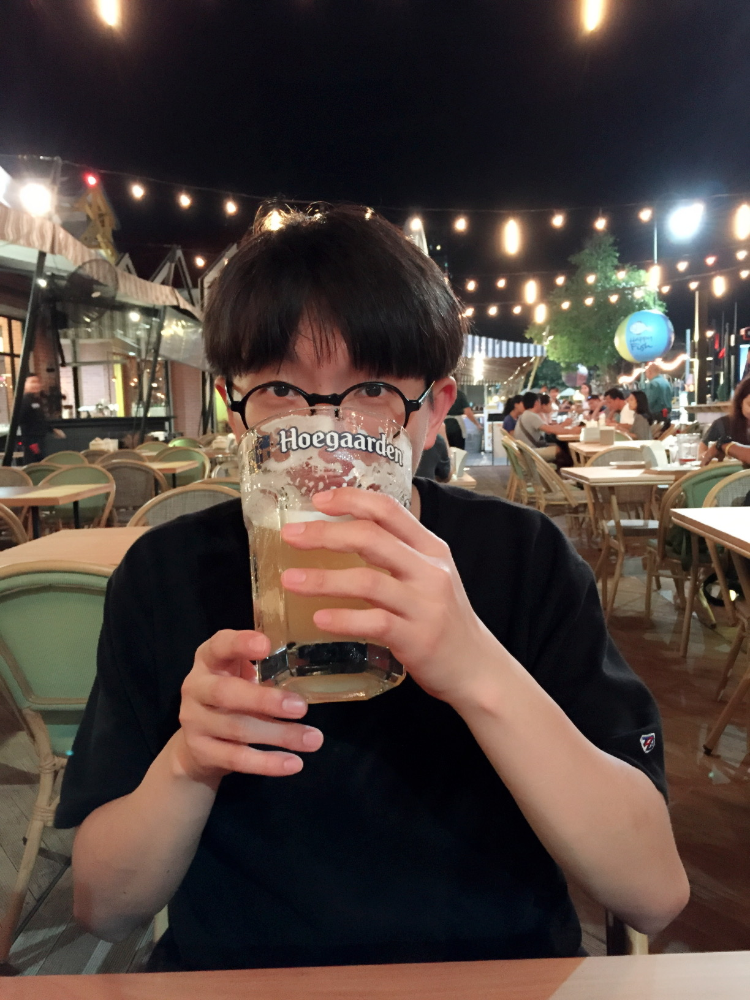

관심분야: 머신러닝, 딥러닝, 자연어처리
최종현
나이: 28세/ 거주지: 서울 서대문구관심분야: 머신러닝, 딥러닝, 자연어처리
소개 : 안녕하세요! :-) 데이터 사이언티스트가 되기위해 공부하고 있는 최종현입니다.
현실에 안주하지 않고, 꿈을 이루기 위해 도전하겠습니다. DEV-STUDY를 통해 다양한 분야에 대한 지식을 습득하고 공유하고 싶습니다!
막상 쓰려니 어떤걸 써야할지 모르겠네요...ㅜㅜ
현재 제가 공부하고 있는 분야에대해 블로그를 운영중에 있습니다. 저에 대해 알고싶으신 분은 아래의 Social에서 확인하시면 됩니다~^^